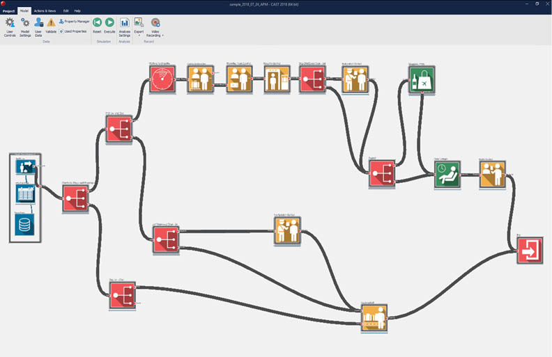
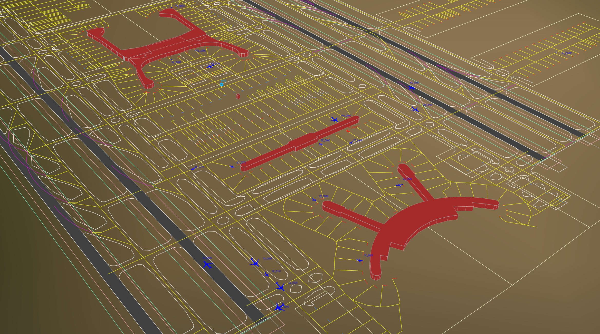
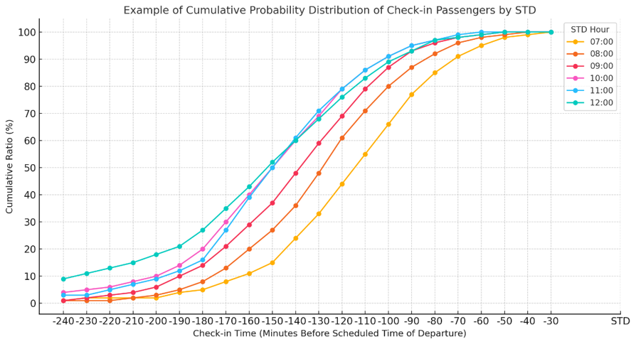
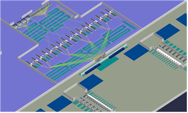
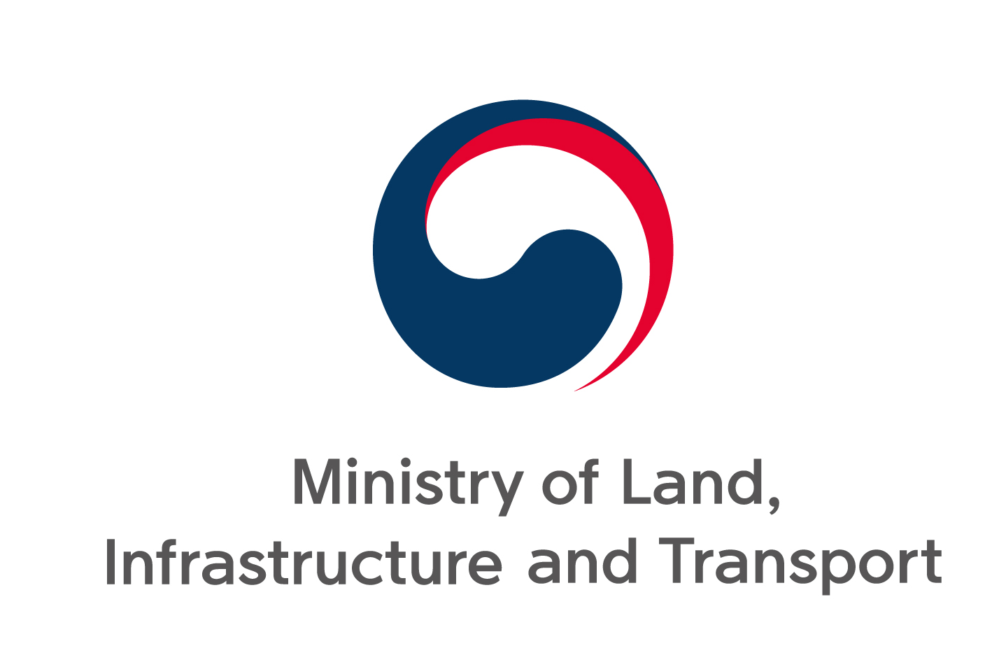

I am a Ph.D. student and research assistant in Air Transportation at Korea Aerospace University. I use aircraft trajectory and passenger flow data, simulation, and machine learning to study airport operations and air traffic management. My research focuses on understanding aviation systems and supporting operational decision-making.
I received my Master's and Bachelor's degrees in Air Transportation from Korea Aerospace University, where I completed my Master's under the supervision of Hojong Baik.
Research Keywords: airport operations, air traffic management, aviation simulation, machine learning, decision support systems
Journal of the Korean Society for Aviation and Aeronautics, 2025
An analysis of major Asian airport networks using the NetScan model, examining direct, indirect, and hub connectivity with a focus on Incheon International Airport.
Joongha Shin, Byungha Yi, Minwoo Kim, Jawoon Cho, Juhwan Lee
Journal of the Korean Society for Aviation and Aeronautics, 2025
An airport capacity utilization assessment using the Capacity Coverage Chart to identify demand patterns, operational constraints, and periods of congestion.
Journal of the Korean Society for Aviation and Aeronautics, 2021
A visualization of airline fleet state changes using dimensionality reduction to distinguish regular operating patterns from schedule disruptions.
Projects

SEP 2025–MAR 2026
Airport Integrated Information System (IIS) Enhancement
INCHEON INTERNATIONAL AIRPORT
Analyzed airport operational data, including flight schedules, passenger flows, and observed queue lengths and waiting times. Developed and validated a CAST-based passenger terminal simulation model.
CAST Airport data analysis Queue analysis

OCT–DEC 2025
Strategic Planning for Airport Hub Competitiveness
INCHEON INTERNATIONAL AIRPORT
Analyzed airport operations using TAAM to assess delay changes under varying passenger demand and capacity conditions. Supported strategic evaluation of airport competitiveness from an operational performance perspective.
TAAM Airport competitiveness Delay analysis

JUL–DEC 2025
Passenger Terminal Simulation Model Development
INCHEON INTERNATIONAL AIRPORT
Developed MATLAB-based simulation models for departure passenger processing facilities using actual airport observation data. Estimated queue length and waiting time under time-varying demand and operational conditions.
MATLAB Passenger flow Queue analysis
JUL–DEC 2025
Apron Congestion Mitigation through Variable Multiple Taxi-Line Operations
JEJU INTERNATIONAL AIRPORT
Simulated apron congestion and aircraft surface movement using TAAM. Evaluated taxi-line operational alternatives for congestion mitigation and surface movement efficiency.
TAAM Surface operations

SEP 2022–AUG 2024
Airport Master Plan
INCHEON INTERNATIONAL AIRPORT
Performed runway capacity analysis using TAAM and passenger terminal simulation using CAST. Evaluated capacity, congestion, delay, and economic feasibility for airport master planning.
TAAM CAST Capacity analysis

SEP–DEC 2021
Development of Airport Capacity Assessment Guidelines
MINISTRY OF LAND, INFRASTRUCTURE AND TRANSPORT
Supported the development of airport capacity setting guidelines for airport planning and management. Reviewed capacity concepts, operational constraints, and demand–capacity relationships.
Performance-Based Navigation (PBN) Flight Procedure Maintenance and Evaluation
MINISTRY OF LAND, INFRASTRUCTURE AND TRANSPORT
Analyzed observed aircraft trajectory data to evaluate the effectiveness of flight procedures under the operation of Continuous Descent Operations (CDO) and Continuous Climb Operations (CCO).
PBN CDO/CCO Effectiveness analysis
Awards
2026
Best Paper of Session Award
AIAA DATC/IEEE Digital Avionics Systems Conference Airport and Terminal Operations Analytics
2021
Academic Merit Scholarship
KAU Professional Talent Development Scholarship US$4,520
2020
2nd Place
Capstone Design Competition US$259
2019
2nd Place
ICT Startup Makerthon
2019
Academic Merit Scholarship
Jeongseok C Scholarship US$841
2016
Academic Merit Scholarship
Jeongseok C Scholarship US$739
Technical skills
Programming
Python, MATLAB, LaTeX
Frameworks
PyTorch, NumPy, Scikit-learn
Simulation
TAAM (Total Airspace and Airport Modeller), CAST (Passenger Terminal Simulation)